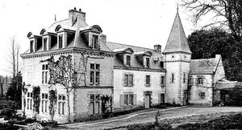
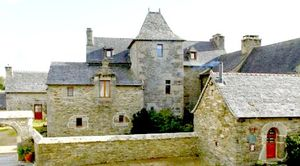
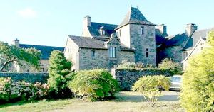
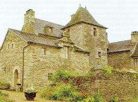
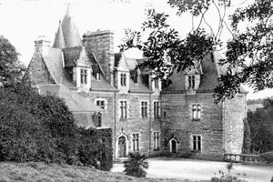
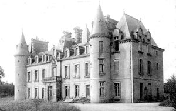
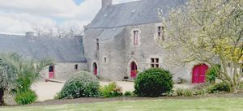
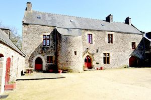

Recensement Jean-Claude Truffet
| Département | 29 — Finistère |
| Canton | Plouigneau |
| Commune | Plouigneau, |
| Type d'édifice | Château |
| Période d'origine | XVIII-XIX |
| Coordonnées GPS | 48° 34' Nord, 3° 42' Ouest |








Trois châteaux à Plouigneau; Coetmen-Trojoa, Lannidy, Mur, et Kerrelou. COETMEN-TROJOA, restauration d'un édifice plus ancien à la fin du XIXe siècle avec adjonction d'un pavillon et d'une tour d'escalier. Bâtiment de plan allongé composé d'un corps de logis encadré d'une aile de dépendances et d'un pavillon rectangulaire. Une tour d'escalier de plan carré et couverte en pavillon occupe l'angle du côté de l'aile latérale. Elévation de moellon enduit avec encadrements de baies, chaînes d'angle, bandeaux horizontaux, corniche et lucarnes en pierre de taille. Le château fut propriété successive des familles le Bouloigne en 1669, Chateaudassy, Jamin, Ploësquellec, Barrial du Breuil et Le Rouge de Guerdavid. LANNIDY, restauration dans le style néo-gothique de la deuxième moitié du XIXe siècle d'un manoir remontant au XVe siècle ayant appartenu à cette période à l'évêque de Tréguier, Jean Calloët. Puis il passe aux familles Du Dresnay par le mariage de la fille de Jean Marie du Marchallach avec le vicomte Vincent Joseph du Dresnay, député de Morlaix, puis Kersauson suite au mariage de Marie Louise du Dresnay avec Ludovic de Kersauson Vieux Châtel, aux La Jaille et aux Monnier. Le manoir possédait jadis une chapelle privée dédiée à Saint Idy. L'édifice possède une double tour : une grande hexagonale portants des ouvertures à meneaux sur ses pans, et une plus petite et à cul-de-lampe accolée à la grande. KERELLOU , le Manoir de Kerellou est unique en son genre. Ce manoir breton en pierre de granit date du XVIe siècle et, depuis 1982, est Gîte de France.
LANLEY, le manoir de Lanleya du XVIe siècle, propriété de Mme de Lampezre, et des familles du Parc, Du Dresnay, Kermoisan (ou Kermoysan) et Kergariou (comte de Kervegant). Ce manoir, en partie ruiné, a été restauré à partir de 1991 par M. André Marrec, alors libraire à Plougasnou. A l'époque de la Révolution la terre de Lanley appartenait à Messire Jonathas de Kergariou, comte de Kervégant, mort à Kergrist en Ploubezre le 17 floréal an II. Sa fille héritière de Catherine-Vincente-Reine, mariée en 1781 à Sébastien-François Barbier marquis de Lescoet, ayant émigré à Hambourg, la nation s'empara de ses biens et les mit en vente. Les manoirs et métairies de Lanleya furent acquis le 15 Messidor an VIII par les citoyens Dauxais et Yves Le Manach, tandis que le moulin devenait le 25 août 1808 la propriété de Monsieur Pezron et que le citoyen Yves Lelchat s'adjugeait la chapelle 1e 26 Floréal an III, au citoyen Yves Nigeou, parent d'un prêtre insermenté de Plouigneau, qui ne l'acheta que dans le but de la rendre un jour au culte catholique. MUR (du) château construit au début du XVIIIe siècle pour Julien Croueze, il passe à la famille de Guernissac en 1772. En 1870, Louis de Guernissac restaure et agrandit (ou reconstruit, l'édifice et construit ainsi que les communs. Propriété de la famille de Penguern, et par alliance, à la famille Servin. Édifice de plan allongé symétrique ; sur l'une des façades, le corps principal est encadré de deux tours et de deux pavillons perpendiculaires, la travée centrale recevant un avant-corps couvert en pavillon. La façade opposée est occupé par un pavillon central. Élévation de moellon enduit avec encadrement de baies, bandeaux horizontaux, corps d'entrée, corniche et lucarnes en pierre de taille. Il possédait autrefois une chapelle privée.
Coetmen :Famille Le Bouloigne Lannidy; Famille Du Dresnay Lanley; famille du Parc,
"
Trois châteaux à Plouigneau; Lanley grav-2-3-4 Coetmen-Trojoa grav-1, Kerellou grav-7-8 Lannidy grav-5 et Mur grav-6. Coetmen GPS : 48° 34' Nord, 3° 42' Ouest